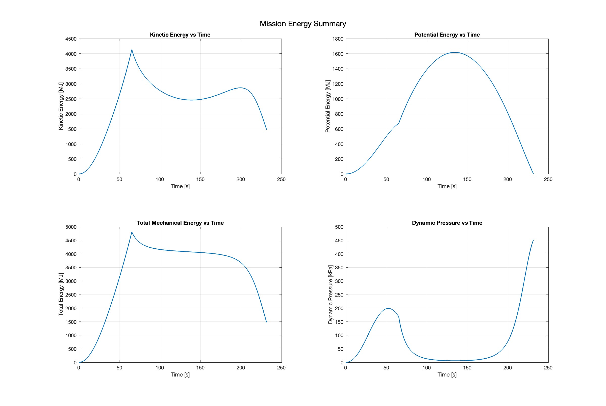
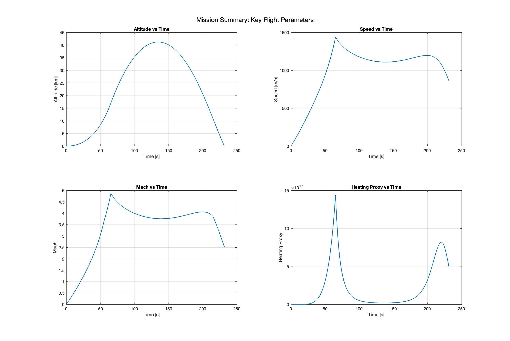
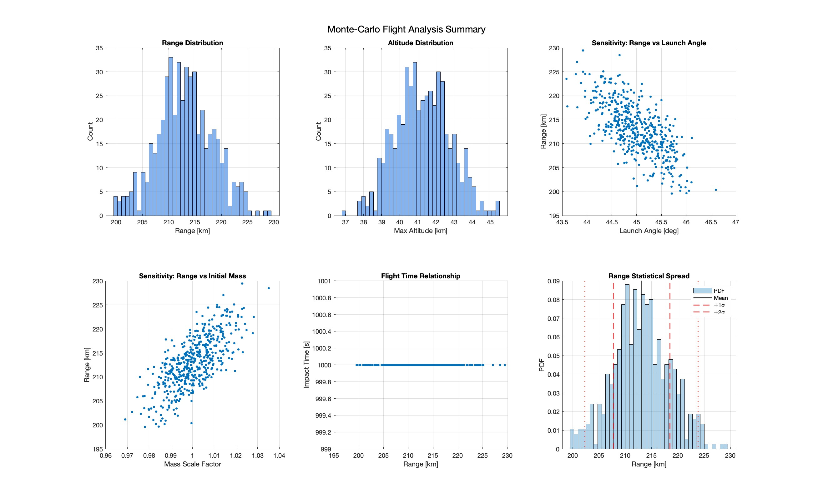
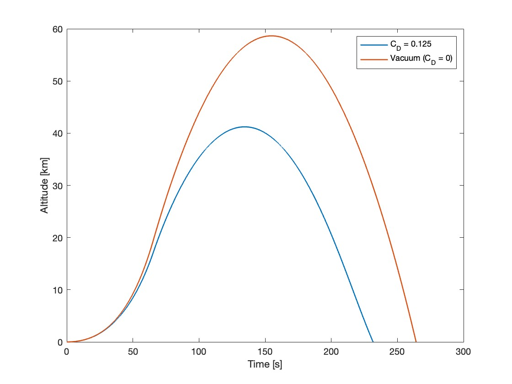

This project is a 6DOF unguided rocket simulation written in C++
using a modular, object-oriented structure. The model advances translational motion
through force integration with a time-varying mass and advances rotational motion using body-rate
equations with Euler angle kinematics. Aerodynamic drag, thrust modeling, gravity-turn behavior,
and a Monte-Carlo routine for launch angle and mass variations are all included
to evaluate sensitivity and dispersion.
What I Worked On
Implemented 6DOF rigid-body equations using Euler angle kinematics and p q r body-rate propagation.
Built reusable C++ math utilities for vectors, rotation conversions, and forces.
Modeled thrust with linear mass depletion and computed drag from dynamic pressure, Cd, and reference area.
Advanced all states using a forward Euler integrator.
Object-oriented C++ architecture (Vector3, Quaternion, RigidBody, Aerodynamics, Propulsion)
Created a Monte-Carlo system that perturbed launch angle and mass scale to study trajectory dispersion.
What I Learned
How to structure a multi-file C++ simulation with clear separation between math, dynamics, and integration logic.
How to debug coupled rotational and translational equations and ensure stable propagation with small time steps.
How aerodynamic forces and simple model assumptions influence sensitivity studies.
How to build flexible simulation code that can be extended, modified, or repurposed for more complex GNC work/li>
Modular aerospace software design using C++ OOP
Rocket attitude dynamics
2D trajectory visualization

Energy evolution over full flight

Altitude, Mach, and heating proxy

Monte-Carlo dispersions

Vacuum vs atmospheric trajectory
VIEW SOURCE CODE
REFERENCES & MATERIALS
•Modern C++ for Absolute Beginners: A Friendly Introduction to C++ Programming Language and C++11 to C++20 Standards by Slobodan Dmitrović
•Claude AI - Relating C++ to MATLAB
•OpenAI for Website Building
•C++ for Engineers and Scientists by Gary Bronson
•Fundamentals of Six Degrees of Freedom Aerospace Simulation and Analysis in C++, Second Edition by Peter H. Zipfel